Matemáticas
33 recursos de Matemáticas en español, sin preparación y con solucionario: fichas de lectura, búsquedas del tesoro y más, filtrables por grado.
33 recursos
Grado

«El laboratorio de pan de jengibre: Geometría entre moldes, medidas y casas» – Búsqueda del tesoro de lectura

Juego de roles multiplicación y división | Panadería de Navidad Grado 2

«Aventura de conteo con castañas» – Búsqueda del tesoro de lectura
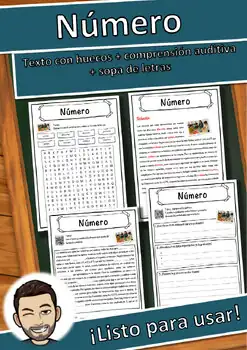
Número – Ficha de lectura: texto con huecos, comprensión auditiva y sopa de letras
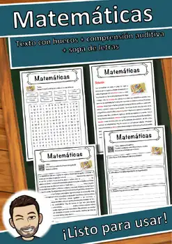
Matemáticas – Ficha de lectura: texto con huecos, comprensión auditiva y sopa de letras
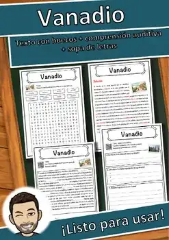
Vanadio – Ficha de lectura: texto con huecos, comprensión auditiva y sopa de letras
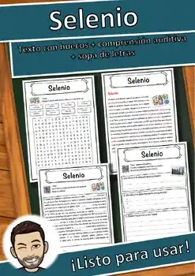
Selenio – Ficha de lectura: texto con huecos, comprensión auditiva y sopa de letras
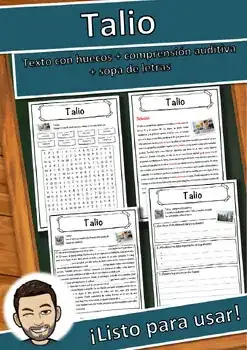
Talio – Ficha de lectura: texto con huecos, comprensión auditiva y sopa de letras
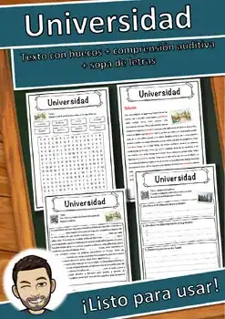
Universidad – Ficha de lectura: texto con huecos, comprensión auditiva y sopa de letras
Síndrome de Down – Ficha de lectura: texto con huecos, comprensión auditiva y sopa de letras
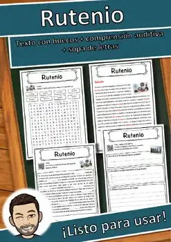
Rutenio – Ficha de lectura: texto con huecos, comprensión auditiva y sopa de letras
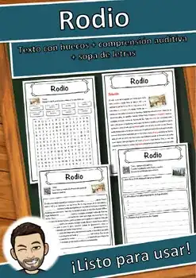
Rodio – Ficha de lectura: texto con huecos, comprensión auditiva y sopa de letras
Protactinio – Ficha de lectura: texto con huecos, comprensión auditiva y sopa de letras
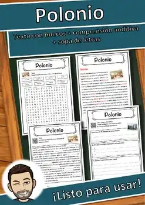
Polonio – Ficha de lectura: texto con huecos, comprensión auditiva y sopa de letras
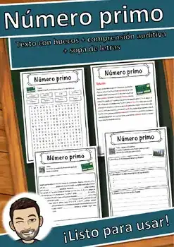
Número primo – Ficha de lectura: texto con huecos, comprensión auditiva y sopa de letras
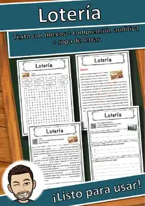
Lotería – Ficha de lectura: texto con huecos, comprensión auditiva y sopa de letras
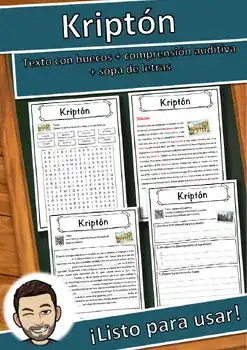
Kriptón – Ficha de lectura: texto con huecos, comprensión auditiva y sopa de letras
Itrio – Ficha de lectura: texto con huecos, comprensión auditiva y sopa de letras
Holmio – Ficha de lectura: texto con huecos, comprensión auditiva y sopa de letras
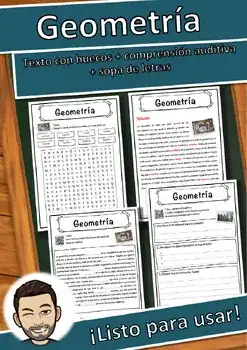
Geometría – Ficha de lectura: texto con huecos, comprensión auditiva y sopa de letras
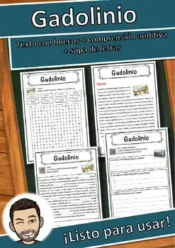
Gadolinio – Ficha de lectura: texto con huecos, comprensión auditiva y sopa de letras
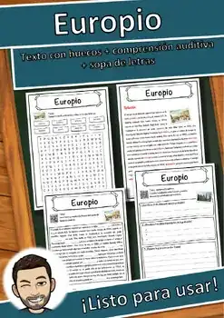
Europio – Ficha de lectura: texto con huecos, comprensión auditiva y sopa de letras
Flúor – Ficha de lectura: texto con huecos, comprensión auditiva y sopa de letras
Escandio – Ficha de lectura: texto con huecos, comprensión auditiva y sopa de letras
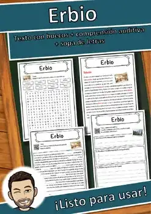
Erbio – Ficha de lectura: texto con huecos, comprensión auditiva y sopa de letras
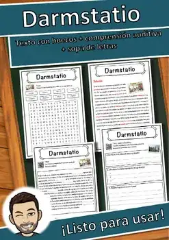
Darmstatio – Ficha de lectura: texto con huecos, comprensión auditiva y sopa de letras
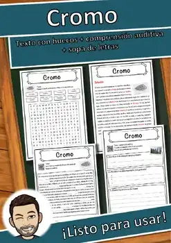
Cromo – Ficha de lectura: texto con huecos, comprensión auditiva y sopa de letras
Cobalto – Ficha de lectura: texto con huecos, comprensión auditiva y sopa de letras
Cloro – Ficha de lectura: texto con huecos, comprensión auditiva y sopa de letras
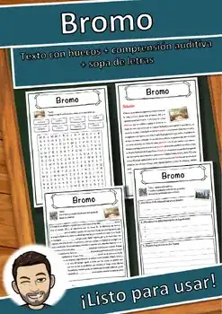
Bromo – Ficha de lectura: texto con huecos, comprensión auditiva y sopa de letras
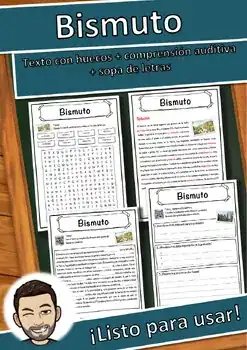
Bismuto – Ficha de lectura: texto con huecos, comprensión auditiva y sopa de letras
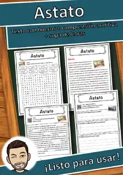
Astato – Ficha de lectura: texto con huecos, comprensión auditiva y sopa de letras
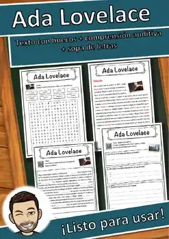
Ada Lovelace – Ficha de lectura: texto con huecos, comprensión auditiva y sopa de letras
No se encontraron recursos. Prueba con otra palabra o con otro filtro.